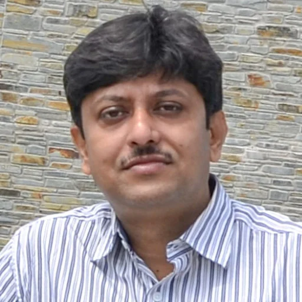

Research Overview
Modern power systems are undergoing a rapid transformation due to the increasing penetration of inverter-based renewable energy resources. Conventional protection and control methods, originally developed for synchronous generator-dominated systems, face significant challenges in inverter-interfaced microgrids because of limited fault current contribution, changing system dynamics, and multiple operating modes.
My research focuses on developing reliable protection and control strategies for inverter-interfaced microgrids, with particular emphasis on grid-forming inverter dynamics, islanding detection, adaptive protection schemes, and hardware validation using Power Hardware-in-the-Loop (PHIL), RTDS, and Typhoon HIL platforms.
Current Research
Microgrid Protection
Development of adaptive protection schemes capable of operating reliably under varying operating conditions and low fault current scenarios in inverter-based microgrids.
Grid-Forming Inverters
Investigation of the dynamic behaviour of grid-forming converters and their impact on protection, stability, and coordinated operation in future power systems.
Islanding Detection
Development of active and hybrid islanding detection techniques with high accuracy, low non-detection zone, and minimal power quality degradation.
Hardware Validation
Validation of developed algorithms through MATLAB/Simulink, RTDS, Typhoon HIL, and PHIL platforms to demonstrate practical feasibility.
Research Network
Current Research Group
Prof. S. R. Samantaray
Ph.D Supervisor
Professor and Dean – PG & Research Programs
Department of Electrical Engineering
IIT Bhubaneswar
Dr. P. D. Achlerkar
Ph.D Co-supervisor
Assistant Professor
Department of Electrical Engineering
IIT Bhubaneswar
Previous Research Mentors

Prof. Abhinandan De
M.Tech Supervisor
Professor
Department of Electrical Engineering
IIEST Shibpur
Dr. Jayanta K. Chandra
B.Tech Supervisor
Associate Professor
Department of Electrical Engineering
Government College of Engineering and Textile Technology, Berhampur, West Bengal, India
Academic Collaborators
Dr. Debdeep Saha
Research Collaborator and Co-author
Senior Research and Development Engineer
Hitachi Energy

Mr. Shivanshu Kumar
Research Collaborator and Co-author
PhD Scholar
Department of Electrical Engineering
IIEST Shibpur
Future Research Directions
- Protection of inverter-dominated power systems
- Adaptive protection using Artificial Intelligence
- Protection of hybrid AC/DC microgrids
- Grid-forming converter control strategies
- Wide-area protection and monitoring
- Resilient active distribution networks
- Digital substations and IEC 61850 applications
- Protection of renewable-rich power systems
Research Gallery